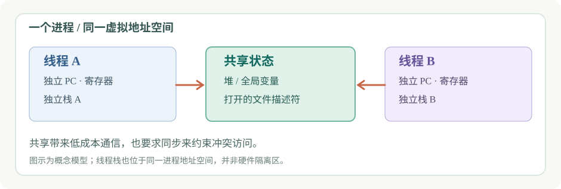
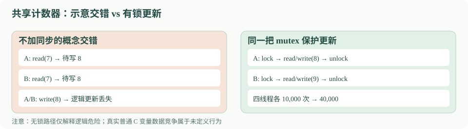
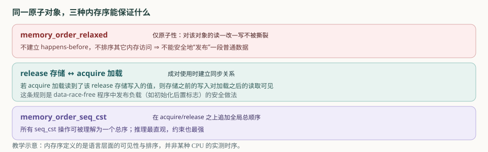

并发编程 · 线程基础 / 22
两个线程都执行了加一，为什么结果可能只增加一？
“执行了两次”不等于“共享状态更新了两次”。并发的困难不是线程跑得快，而是两个独立执行流会在一个共享世界里相遇。从一个计数器开始，我们逐步建立线程、同步与等待的正确模型。
范围：POSIX Threads / Linux 常见实践、C11 及以上的普通内存访问规则。时间线图是说明交错顺序的教学模型，不代表数据竞争程序具有可预测结果。
22.1 先画边界：线程究竟共享什么？
一个进程能容纳多条逻辑执行流。每个线程保存自己的程序计数器、寄存器状态和调用栈；同一进程中的线程通常共享代码、全局数据、堆和打开的文件描述符。于是线程 A 可以拿到线程 B 所用对象的指针；这同时意味着对象的生命周期和同步责任必须明确。

与 fork 后的两个进程不同，普通线程不用跨进程 IPC 就能共享一个队列。但线程不是“零成本进程”：创建和切换都有开销，共享文件描述符还可能彼此改变文件偏移。不要把“线程切换必然更快”当成在所有工作负载下成立的定律。
22.2 从创建到回收：不要把线程 ID 当作完成通知
pthread_create 返回成功，只说明新线程已创建；新线程何时开始、两个线程谁先打印，均不由创建顺序保证。默认可连接线程需要通过 pthread_join 回收；或显式分离，让它结束后自动释放可回收的线程资源。
/* POSIX 示例；保存为 hello.c，cc -std=c11 -Wall -Wextra -pthread hello.c -o hello */
#include <pthread.h>
#include <stdio.h>
#include <stdlib.h>
static void *hello(void *arg) {
int id = *(const int *)arg;
printf("worker %d\n", id);
return NULL;
}
int main(void) {
pthread_t t[2];
int ids[2] = {1, 2}; /* 两个地址均在 join 之前有效 */
for (int i = 0; i < 2; ++i)
if (pthread_create(&t[i], NULL, hello, &ids[i]) != 0)
abort(); /* 教学简化：生产代码须回收已创建线程 */
for (int i = 0; i < 2; ++i)
if (pthread_join(t[i], NULL) != 0) abort();
return 0;
}参数所有权陷阱：把循环变量 &i 传给所有线程并持续修改它，会产生未同步访问风险；单独的 ids[i] 只有在其内容不再被并发修改、且生命周期覆盖线程使用期时才安全。Pthreads 函数通常以返回值表示错误号，而不是统一通过 errno。编译应使用 -pthread，它比只写 -lpthread 更完整地配置编译与链接。
22.3 读—改—写：丢失更新是怎样发生的？
想象两个执行流各自完成一次 counter = counter + 1。在抽象的读—计算—写序列里，它们可以先读到同一旧值，再分别写回相同新值。一次覆盖了另一次的更新。
交错顺序实验：只改变调度，不改变操作
从 counter=7 出发，两条线程各做一次“加一”。选择执行方式，比较结果与原因。
这里演示的是指令级交错的直觉，未同步的普通 C 共享变量读写属于数据竞争，语言层面是未定义行为。
必须区分两个层次：上图在“每次读写都如实发生”的假设下展示一个可能的硬件直觉；但 C11 之后，两个线程无同步地冲突访问普通对象且至少一方写入，构成数据竞争（data race），程序行为未定义。不能保证打印小于预期、不能靠 volatile 修复，也不能依赖测试时的某次调度。
22.4 互斥锁把更新组成不可交错的临界区
锁的职责不是“让自增更快”，而是使共享状态的一组操作对其他持同一锁的线程呈现为整体。必须始终用同一把锁保护对应数据；锁住后更新、完成后解锁，读取同一受保护状态的线程也须遵守约定。
/* 省略头文件和错误处理；完整可运行版见 examples/olah-ch22-sync.c */
static int counter = 0;
static pthread_mutex_t mu = PTHREAD_MUTEX_INITIALIZER;
static void *increment(void *unused) {
(void)unused;
for (int i = 0; i < 10000; ++i) {
pthread_mutex_lock(&mu);
++counter;
pthread_mutex_unlock(&mu);
}
return NULL;
}正确的两线程示例在两个 pthread_join 成功返回后得到 20000。如果只是独立计数，也可用 C11 _Atomic 和 atomic_fetch_add；但多个变量须满足联合不变量时，单个原子自增不能替代互斥事务。锁的粒度应覆盖维持不变量所必需的全部步骤，耗时 I/O 则通常放到锁外。
22.5 当条件不满足：为什么不能拿着锁睡觉？
生产者把数据送入容量有限的队列；消费者取走数据。空队列不应让消费者一直轮询。条件变量把“放弃 CPU 等待”与“在互斥锁保护下重新检查状态”连接起来：
/* 示意：count、items、not_empty 与 mu 属于同一共享队列 */
pthread_mutex_lock(&mu);
while (count == 0)
pthread_cond_wait(¬_empty, &mu);
int value = items[--count];
pthread_mutex_unlock(&mu);pthread_cond_wait 必须在已持有互斥锁时调用；它将释放锁并进入等待作为原子同步动作，返回前再次持有锁。条件变量并不保存一次 signal 作为“令牌”。线程醒来时状态可能已被别的消费者改变，也允许虚假唤醒，因此判断应写成 while (谓词不满足) 而非 if。
- 检查谓词：队列当前是否可读 / 可写？检查与修改都在互斥锁下。
- 等待变化：谓词不成立就调用
pthread_cond_wait，让生产者能获得锁。 - 发出通知：改变状态后通知可能受益的等待者；被唤醒者重新拿锁并验证谓词。
多个生产者/消费者通常分别用 not_full、not_empty 表示不同谓词。需要关闭时再增加 closed 状态并唤醒所有等待线程，否则消费者可能永远睡下去。“被通知”不是“条件仍成立”。
22.6 把直觉写成可验证的实验
仓库提供一个有确定输出的 POSIX 小程序，分别检验多线程计数与单槽生产者—消费者的协作。运行：cc -std=c11 -Wall -Wextra -Werror -pedantic -pthread examples/olah-ch22-sync.c -o /tmp/ch22 && /tmp/ch22，应打印 sync-ok。实验通过不代表任何未同步改写的反例是合法 C 程序。
资料与范围
参阅 pthread_create(3)、pthread_join(3)、pthread_cond_wait(3) 和 C 内存模型。图示属于教学抽象；调度、可见性和错误返回请以目标平台规范为准。
技术深描 · 22 / CONCURRENCY MODEL
四个线程各加 10,000 次：怎样证明结果必定是 40,000？

设共享变量初值为 7，两条线程都打算执行一次 counter++。教材常画出 A read 7 → B read 7 → A write 8 → B write 8，以帮助理解为何读—改—写不是一个原子动作。但真实 C 程序若让线程无同步地访问并修改普通 int，会构成数据竞争与未定义行为；不能根据示意图宣布真实程序的最终值只可能是 8 或 9。
可复现的正确版本用 pthread_mutex_t 把整个三步操作包起来：四条工作线程各执行 10,000 次，每次都遵守同一把锁，最后主线程 pthread_join 全部工作线程，读取总计数为 4 × 10,000 = 40,000。互斥提供的是同步及访问排序，不是让所有代码在物理上永远只运行一条线程。
| 机制 | 需要满足的条件 | 可保证什么 |
|---|---|---|
单纯 volatile int | 无同步 | 不能防数据竞争，也不实现原子加一 |
pthread_mutex_lock | 所有共享更新都持同一把锁 | 临界区互斥；相应加锁解锁形成同步 |
C11 原子 atomic_fetch_add | 所有相关读写遵守原子对象语义 | 原子读—改—写；内存序仍需按需求选 |
pthread_join | 工作线程可连接且已完成 | 主线程可在 join 后检查最终状态 |
cc -std=c11 -Wall -Wextra -Werror -pedantic -pthread examples/deep-ch19-23.c -o /tmp/deep-io
/tmp/deep-io mutex
python3 examples/deep-ch19-23-models.py 22实际 C 实验只执行没有数据竞争的正确版本，不编译运行未定义行为来“观察丢失更新”。如果多个锁保护不同资源，仍要考虑锁顺序、死锁与锁粒度。参考 pthread_mutex_lock(3p)、pthread_join(3) 与 C 内存模型。
逐步核验 · 22b / MEMORY ORDER
互斥锁之外，原子操作的“内存序”到底保证了什么？

上一节用互斥锁把整个读—改—写包成临界区。若改用原子操作，还必须回答“用哪种内存序”。C11 把原子性与排序/可见性拆成两件事：memory_order_relaxed 只保证对该原子对象的读—改—写不可分割，却不为其它普通读写建立 happens-before。
| 内存序 | 对原子操作本身 | 对其它内存访问 |
|---|---|---|
relaxed | 原子（不可撕裂） | 不排序，不发布负载 |
release 存储 / acquire 加载 | 原子 | 成对使用时建立同步并公开负载 |
seq_cst | 原子 | 在 acquire/release 之上给所有 seq_cst 操作一个总顺序 |
典型模式是：线程 A 先写普通数据，再用 release 存储把 ready 置 1；线程 B 用 acquire 加载 ready，若读到 1，则 A 在存储之前的写入对 B 之后的读取可见。若 ready 用 relaxed，B 完全可能看到 ready==1 却仍读到旧的负载——这正是“用原子变量发布数据”时最容易犯的错。
python3 examples/deep-ch22-28-b.py 22b模型用脚本化重排对比三种内存序：relaxed 允许“标志已置而负载未发布”，release/acquire 与 seq_cst 则要求观察到标志即观察到负载。它是对语言语义的确定性建模，不是对某款处理器弱内存表现的实测；具体保证以 C 原子内存序 与 C 内存模型 为准。判断某段无锁代码是否成立，应证明它 data-race-free，而不是靠运行结果碰运气。